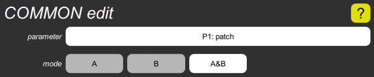

COMMON edit cluster

This shows the edit parameter and edit mode parameters. The former is the parameter to which the Digital Chroma’s parameter control is connected. The latter is whether it affects the A channel of a channelized parameter, the B channel, or both in parallel.
The parameter button shows the parameter number the way it is shown in the Digital Chroma’s display, as P and a number for a regular parameter, or X and a number for an extended parameter. This is most easily changed from the Digital Chroma’s control panel by going into PARAM SELECT mode and then pressing a numbered switch. It can also be set in the Toolkit by first manipulating the parameter on the main screen or in one of the cluster popups, then displaying this cluster and tapping the parameter button. It can also be reset to its default, which is “P1: patch” by long-pressing it. And of course, you can change the mode with the three smaller buttons.